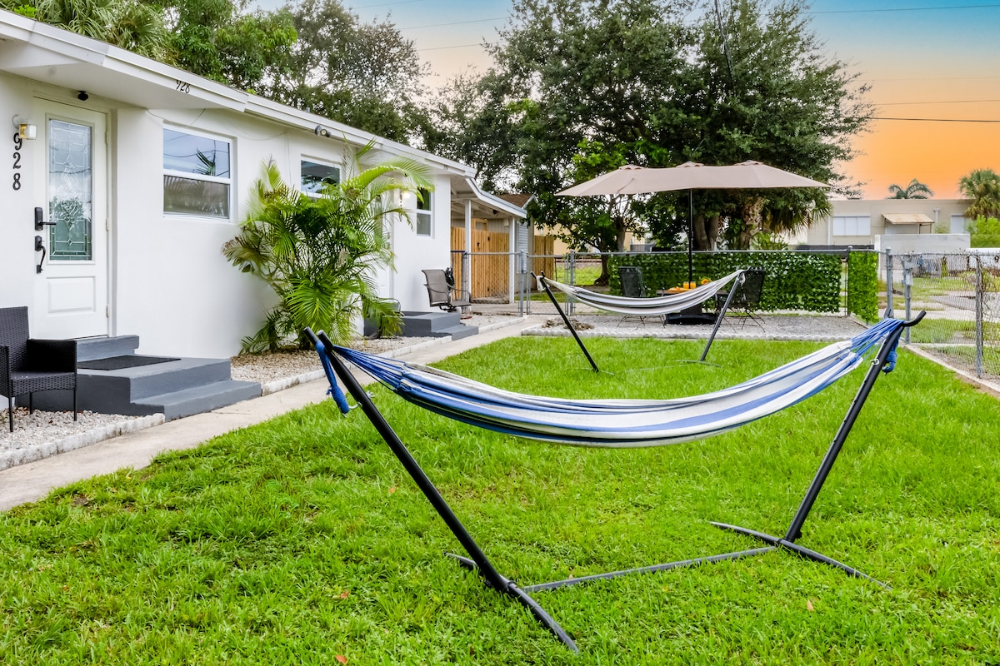
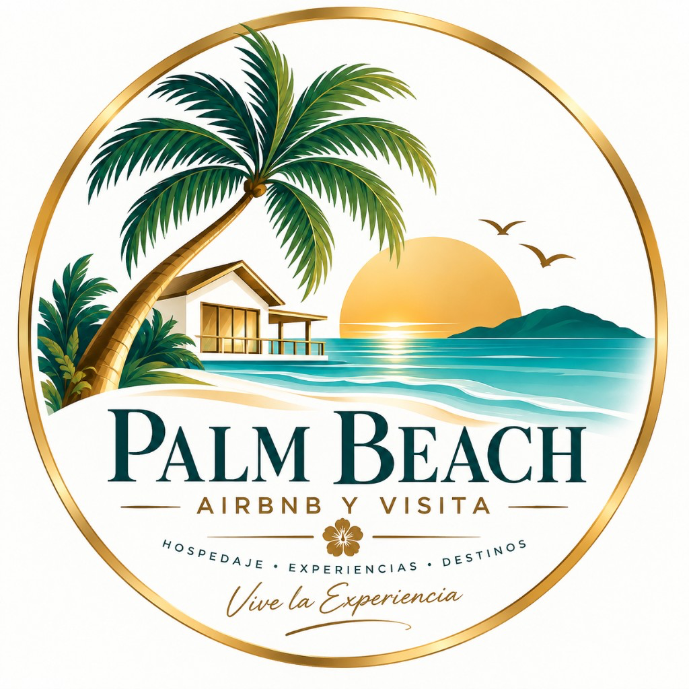
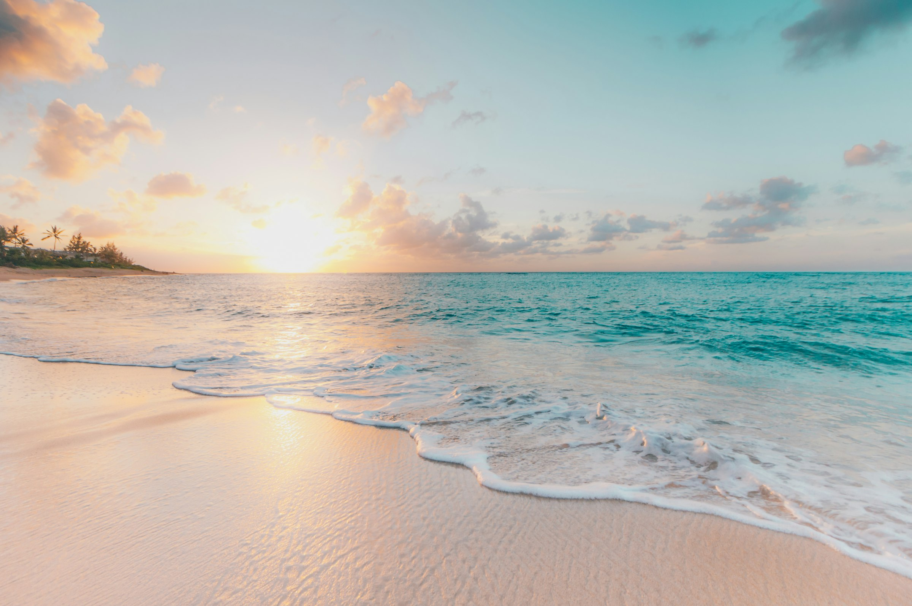
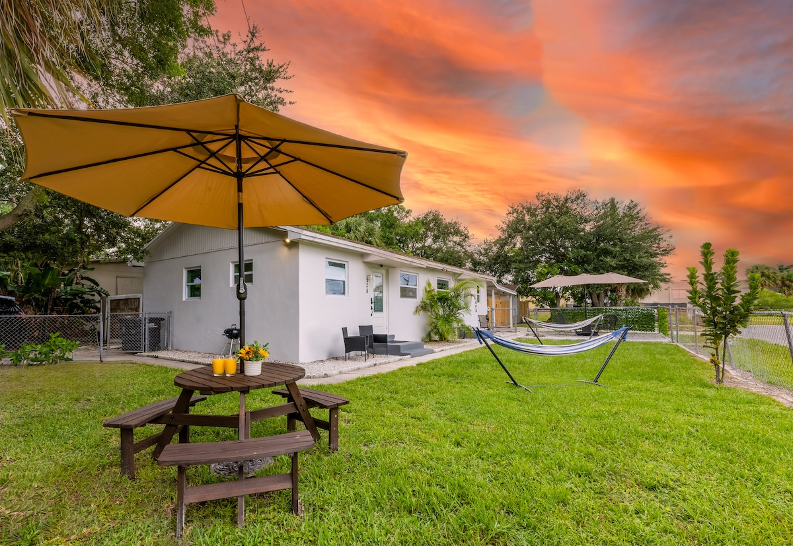
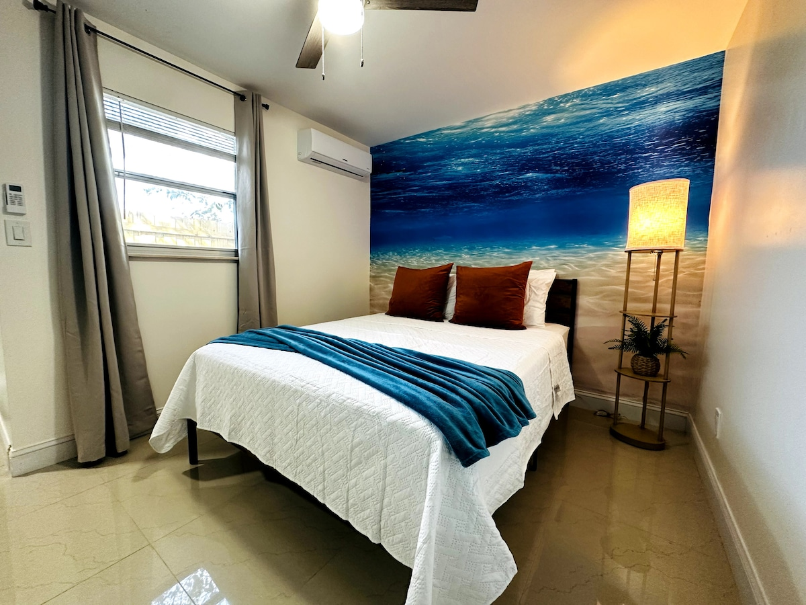
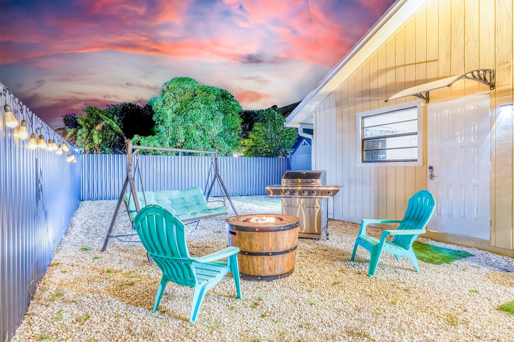
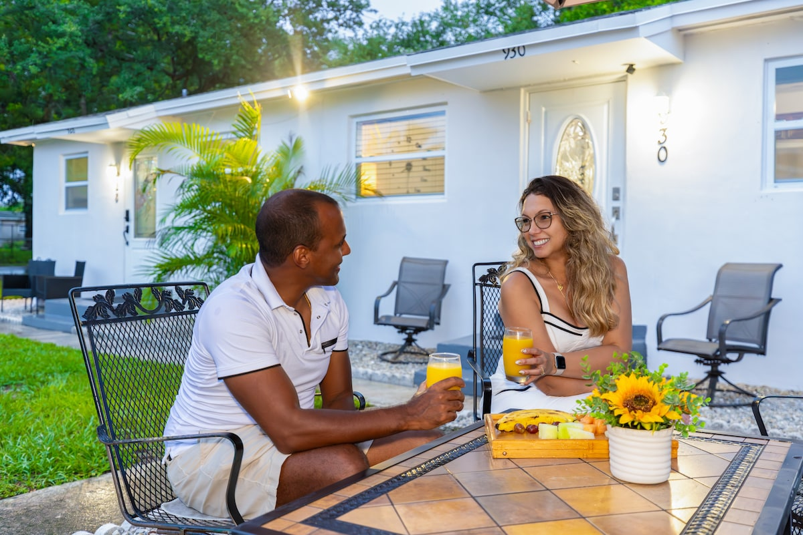
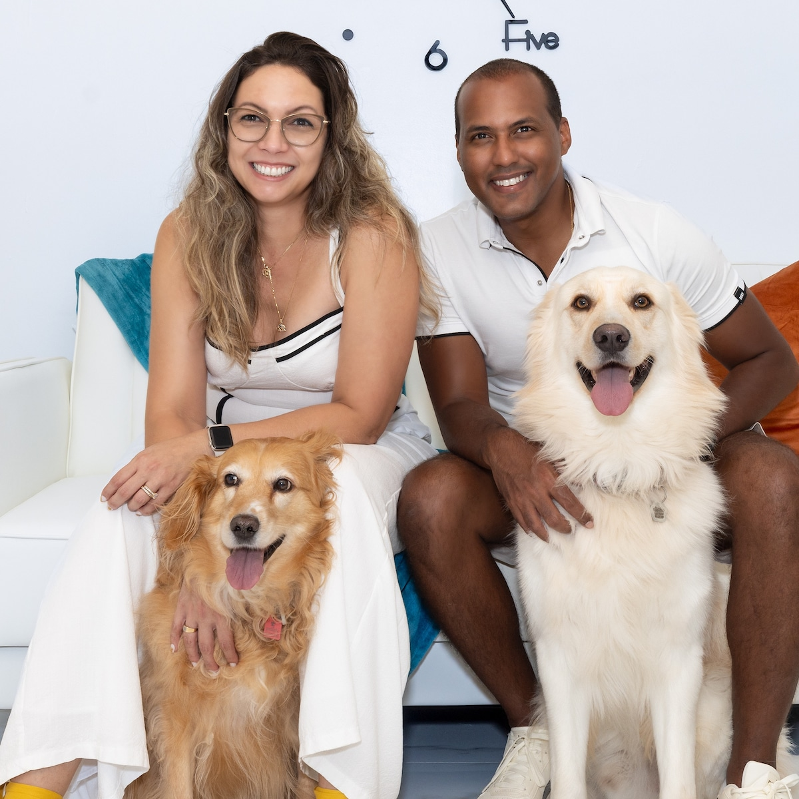

Guest FavoritePropiedad 1 · Flamingo Park
Casa Verde
Unidad completa, pet-friendly, a 10 minutos caminando de downtown.

Visita Palm Beach
West Palm Beach · Lake Worth
Cuatro casas en Airbnb para hospedarte cerca de downtown, la playa y el aeropuerto. Pet-friendly, Guest Favorite y con anfitriones Superhost.
Nuestras casas
Tres casas en West Palm Beach, a minutos de downtown, y una en Lake Worth / Wellington. Todas pet-friendly y con check-in por tu cuenta.

Guest FavoritePropiedad 1 · Flamingo Park
Unidad completa, pet-friendly, a 10 minutos caminando de downtown.

Guest FavoritePropiedad 2 · West Palm Beach
Casa azul, pet-friendly, a 5 minutos de downtown y del aeropuerto.

Guest FavoritePropiedad 3 · West Palm Beach
Studio íntimo con patio privado, a 10 minutos de downtown.

Guest FavoritePropiedad 4 · Lake Worth / Wellington
Studio con patio privado, BBQ y fogata. Ideal para parejas.
Casa Verde
En Flamingo Park: tranquilo, con patio, hamacas y parrilla. Ideal para parejas, viajes en solitario o huéspedes con mascota.
Casa Azul
Unidad completa en West Palm Beach, con recámara en tonos océano, patio, hamaca y BBQ. Pet-friendly, con sofá cama para un segundo par.
Guest House 1
Guesthouse pet-friendly en West Palm Beach: recámara con mural oceánico, kitchenette, patio con columpio y BBQ. Perfecto para parejas o un viaje en solitario.
Guest House 2 · Lake Worth
Airbnb la lista en Wellington; para nosotros es Guest House 2 en Lake Worth. Studio para dos, entrada privada, fogata, parrilla y sillas Adirondack. Ideal si vienes por golf o el Winter Equestrian Festival.
Huéspedes
“This is the cleanest Airbnb I have ever stayed at. The bed was huge and comfy. No animal odors despite being a pet friendly home.”
“We had a great stay! Was able to bring my dog which is always a plus. Jorge was a great communicator and very friendly.”
“Perfect for day trips to downtown shopping and easy access to the beach. Very little traffic… quiet at night and peaceful.”
4.99 · 4.94 · 4.94 · 4.96 · las cuatro son Guest Favorite
La zona
Casa Verde, Casa Azul y Guest House 1 están en West Palm Beach, cerca de downtown, Howard Park y el aeropuerto. Guest House 2 queda en el área de Lake Worth / Wellington, junto a golf y el circuito ecuestre.


Anfitriones
Superhosts con 3 años de experiencia, 305 reseñas y 4.96 de calificación. Vivimos para que tu estadía se sienta fácil, limpia y con alguien al otro lado del mensaje.
Las mascotas son bienvenidas. Las nuestras también salen en la foto.